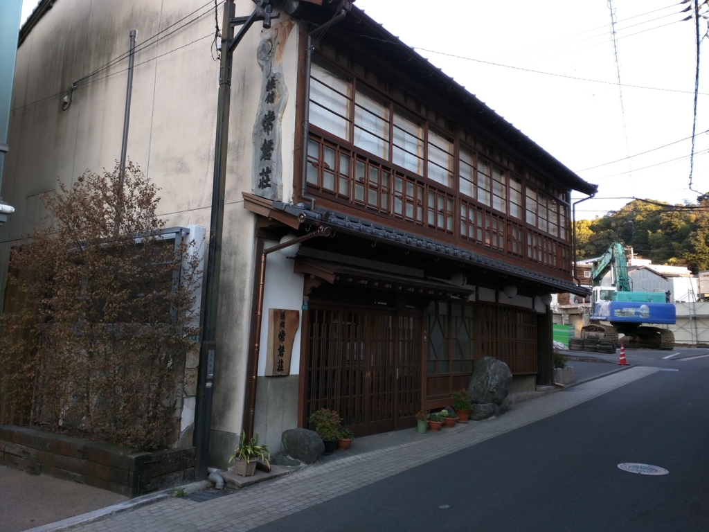
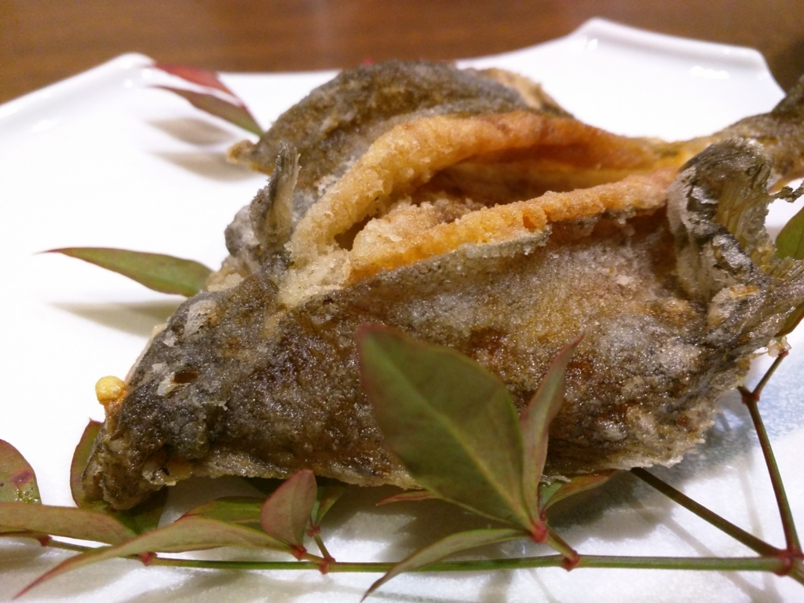
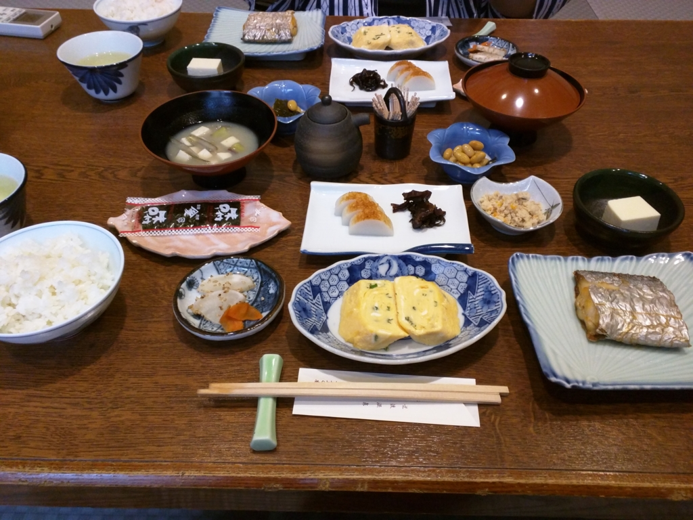

宿とテレビ、あるいは新聞を購読する気になれない理由
公開日：

週末は20年来の友人が松山に来たので、休日に橋を架けて*1、あちこち遊びまわっていた。宿泊は、道後の「常盤荘」。山越の自宅に泊まれば、と申し出てみたのだが、宿に泊まってみたいというし、よく考えたら、地元・松山の宿に泊まる機会などそうそうない。たまにはありかと思い、自宅には鍵をかけ、自分も一緒に泊まることにした。

宿は道後温泉本館から約……1分もかからない気がする。大正時代に建てられたというその宿は、パッと見、ちょっと古ぼけていて、不安な気分にさせられる。しかし、入ってみるとリフォームされたばかりなのか、とてもモダンで清潔な感じ。宿の内部の作りが若干わかりにくいが（とはいえ、すぐに把握できるが）、それすら迷路のように感じられて楽しい。女将さんの対応も大変行き届いており、これまた居心地がよろしい。食事はおさかな中心。味はもちろん、生ビールで楽しめる。瓶ビールだろうな、と思っていたのでちょっとビックリした。さすが競争が熾烈な道後エリア、1万～1.5万円帯の宿でも十分な満足感がある。
さて、宿で泊まるにあたり、宮元町のエディオンで秘密兵器を一つ購入しておいた。「Chromecast」である。これがあれば、スマホで再生している動画を宿の TV へ映し、二人でアニメだか映画を楽しめるであろう（友人は当時高校生の私にアニメを教えた諸悪の根源である）。我ながらナイスアイデアだ。
けれど、この宿には TV がなかった／(^o^)＼*2
日頃 TV を観ないくせに、友人と宿に泊まるときは TV がないとちょっと物足りないのは本当に不思議だが、ないものはしょうがないので、もってきた iPad を立ててアニメを楽しんだ。
そのときちょっと思ったのだが、TV とは本来、家族や友人で共有するものだ。ゲーム用途に所有している場合はそうでないことも多いだろうが、リビングに置いてある TV は一家団欒を楽しむための道具だ。TV にできて、タブレットにできないのは、そういう空間を作り出すことだね。iPad でも二人してアニメは観られるのだが、どうも窮屈でたまらん。
翻って考えてみるに、核家族化・単身世帯の増加は、自分が今まで感じていた以上に TV の需要を足元から掘り崩していたんだろう。NHK の受信料や新聞の購読料でもそうだけど、あれは世帯の人数が少なければ少ないほど割高になる。払いたくなくなる人たちが増えるのも道理ではないかな。なのに、そのミスマッチを改善する努力があまり感じられないのは不思議だ。とくに新聞は個人向け商品開発の余地が十分あるように思うのだが。
もしくは、逆に団欒の場を再び作り出す努力が必要なのかもしれない。「この時間帯はM1層」「あの時間帯はF2層」と小賢しくターゲティングした方が売り込みが容易だというのはわからないではないのだけれど、汎世代的に楽しめるコンテンツって最近ないんじゃないかな。趣味趣向の多様化の影響はもちろんあるだろうけれど、十分それに対抗してきたんだろうか。まぁ、日頃あんまりよく観ないのでよくわかんないのだけれど……。ニュースだけはたまに観るのだが、少子化対策・子育て支援の話を聞くにつけ、TV がすごく他人ごとのように伝えているのが少し気になる。君たちだって、このままでは困るだろうにね。

そんな話はともかく、宿はとてもよかった。また日常に倦んだら、意味もなく泊まりに行きたい。6時に道後温泉入って、7時過ぎに朝ご飯！ たまらんぞ。